Group Leader
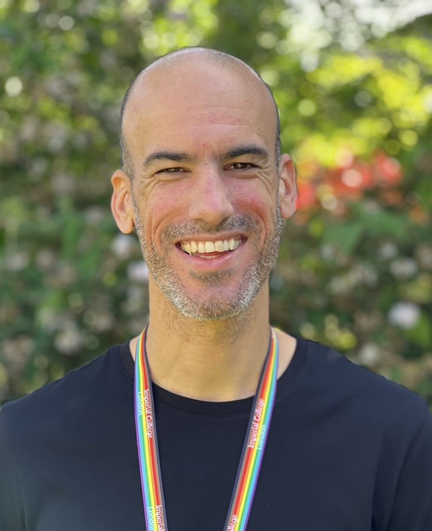
Alexi Nott
Associate Professor in Neuroepigenomics | Imperial College London | UK Dementia Research InstituteLGBTQ+ ChampionEducation:
Univerity of Bath, MBiochem
University College London, Ph.D.
Email: a.nott@imperial.ac.uk
Research:
Alexi's group utilizes nuclei isolation methods and genome-wide sequencing approaches to profile the epigenome of brain cell types using patient-derived archived tissue. Functional interrogation of disease-associated gene regulatory regions is explored using CRISPR DNA-editing technology of pluripotent stem cells derived into brain cell types. Using a combination of these approaches, Alexi’s research examines the epigenome of the human brain to understand how genetic variation contributes to age-related brain disorders.
Postdoctoral Researchers
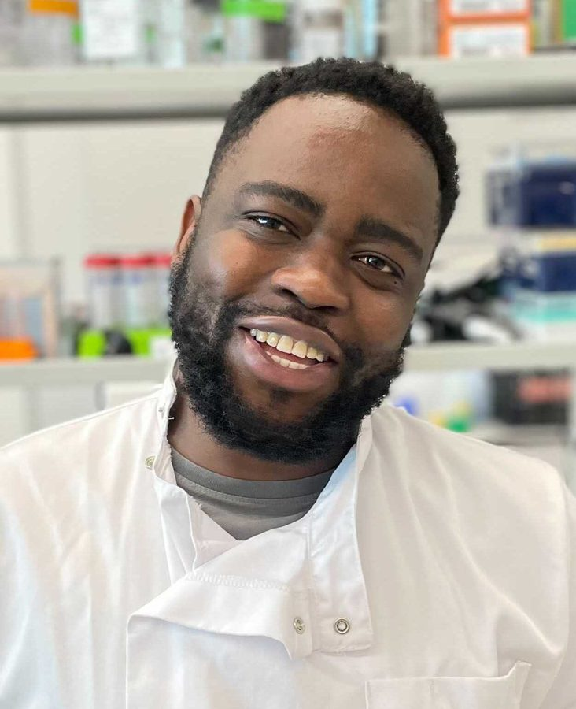
Reuben Yaa
UK DRI Research AssociateBio:
I am a Research Associate in the Nott group at the UK Dementia Research Institute at Imperial. I joined the lab after completing my PhD, which was funded by the Darwin Trust of Edinburgh studentship at King’s College London in the lab of Dr. Fiona Wardle. My PhD research project characterised cis-regulatory elements of TBXT, a transcription factor involved in metastatic cancers in lung, prostate and breast tissue, and in a rare cancer of the spinal column called chordoma. During my PhD, I visited the lab of Dr. Gómez Skarmeta at Andalusian Centre for Developmental Biology (CABD) in Seville, Spain on an European Molecular Biology Organisation (EMBO) fellowship for extended training on assays and tools used in gene regulation studies. Prior to starting my PhD, I worked as a Research Assistant in the lab of Prof. Faith Osier at Kenya Medical Research Institute (KEMRI), Wellcome Trust, Kilfi, where I led a recombinant protein expression and protein micro-array facility in a malaria study. My current project in the Nott group exploits different chromatin and epigenetic assays to characterise enhancer maps associated with neurodegenerative disease risk variants.
Email: r.yaa@imperial.ac.uk
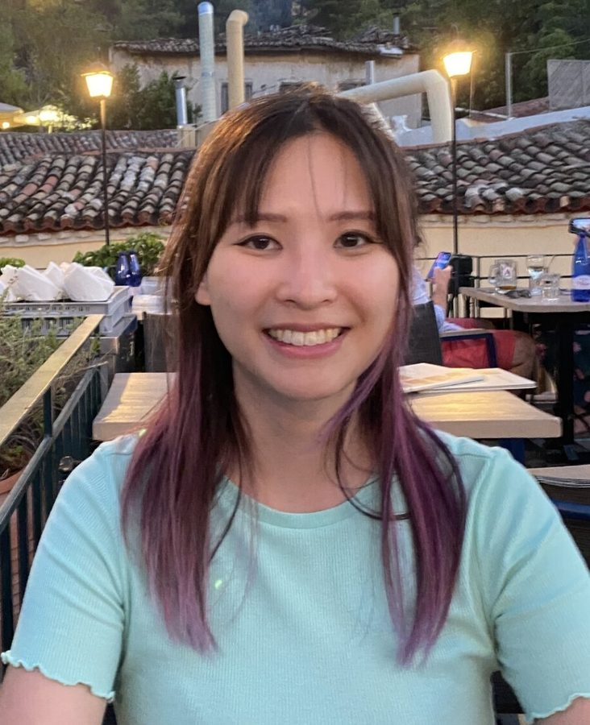
Yukyee Wu
UK DRI Cross Centre PostdocBio:
I am a computational biologist specialising in the analysis of epigenomics data and trends in neurodegenerative diseases at in the Nott group at the UK Dementia Research Institute at Imperial. My current research focuses on Alzheimer’s disease (AD) and Parkinson’s disease (PD), utilising various types of sequencing data to unravel molecular mechanisms driving disease progression. I am particularly interested in mapping epigenetic modifications and integrating multi-omics approaches to identify regulatory elements associated with these conditions.Prior to this, I was a Bioinformatician at Laverock Therapeutics, where I developed strategies for high-throughput sequencing data analysis, as well as integrating AI/ML tools to streamline workflows. Before that I also worked as a Research Associate in NHLI, leading an epigenomics project modelling pulmonary hypertension progression. I also have experience in pain behaviour research at University of Oxford, where I designed studies involving multi-omics datasets and pharmacological screening. My PhD project centred around characterising the localisation and function of melatonin in an aged mouse model.In the future, I aim to expand my research by developing predictive diagnostic and risk models for neurodegenerative diseases and identifying novel therapeutic targets using epigenomics.
Email: yukyee.wu@imperial.ac.uk
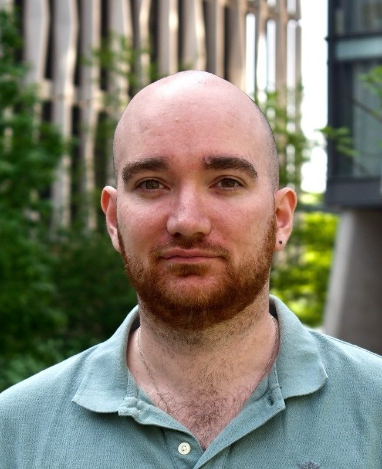
Baptiste Brule
Alzheimer's Association PostdocBio:
I am a Research Associate in the Nott group at UK Dementia Research Institute at Imperial. I am a neurobiologist currently investigating and understanding epigenetic dysregulations that occur in Alzheimer’s disease’s brain, with a particular focus on the immune and vascular cell types. Previously, I completed my PhD in Karine Merienne’s group (University of Strasbourg) where I studied the role of epigenetics in Huntington’s disease (HD). I notably profiled several histone marks in the striatum of HD models and identified that vulnerable neurons exhibit an accelerated aging-dependent loss of identity driven by epigenetic dysregulation. In parallel, I investigated the beneficial effects of an enriched environment on the behaviour and molecular signatures (transcriptomics and epigenetics) of HD mice. Prior to my PhD, I explored the link between metabolic and epigenetic alterations in the HD mouse brain, with a focus on enzymes involved in Acetyl-CoA synthesis..
Email: b.brule@imperial.ac.uk
PhD Students
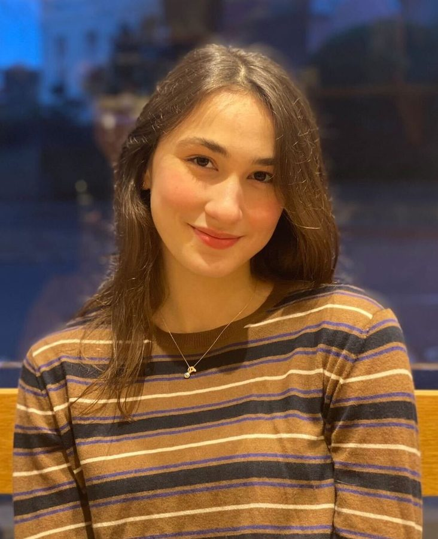
Aydan Askarova
Presidents Award PhD studentBio:
I am a PhD student at the UK Dementia Research Institute within Imperial College London. I received Imperial’s Presidential Scholarship to carry out my research under the supervision of Dr Alexi Nott on characterisation of gene regulatory networks of the brain vasculature that drive age-associated genetic susceptibility and genetic risk of Alzheimer’s disease. Prior to my PhD studies, I completed my MSc in Applied Genomics at Imperial College London and my BSc in Biology at Queen Mary University of London. My MSc project was focused on the identification of cell type specific risk in neurodegenerative disorders using integrative analysis of chromatin interaction data and H3K27ac distribution.
Email: aydan.askarova21@imperial.ac.uk
Research Assistant
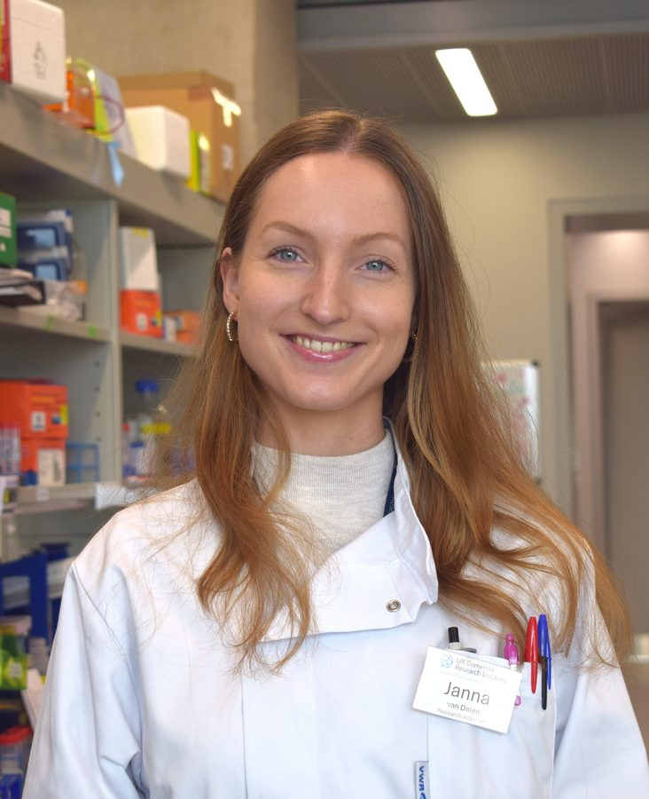
Janna van Dalen
Research Assistant and PhD studentBio:
I am pursuing a PhD as a Research Assistant in Dr. Alexi Nott’s Group at the UK Dementia Research Institute within Imperial College London. My project is focused on investigating epigenomic changes in the immune and vascular cells of the ageing brain. Before starting my PhD, I completed a BSc in Biology and Medical Laboratory Research at Rotterdam University of Applied Sciences. During my fourth year, I completed a project investigating enhancers important for early haematopoietic development at the University of Oxford. I continued my studies by pursuing an MSc in Molecular Neurosciences at the University of Amsterdam. I completed two research projects during my MSc. During the first project, I investigated H3K79 methylation by Dot1L in neuronal cells at the University of Amsterdam. I visited the Nott group to undertake my second research project. Here, I worked on elucidating H3K27ac in brain vascular cell types. I enjoyed my time here so much that I decided to stay in the lab as a research assistant/PhD student!
Email: j.van-dalen22@imperial.ac.uk
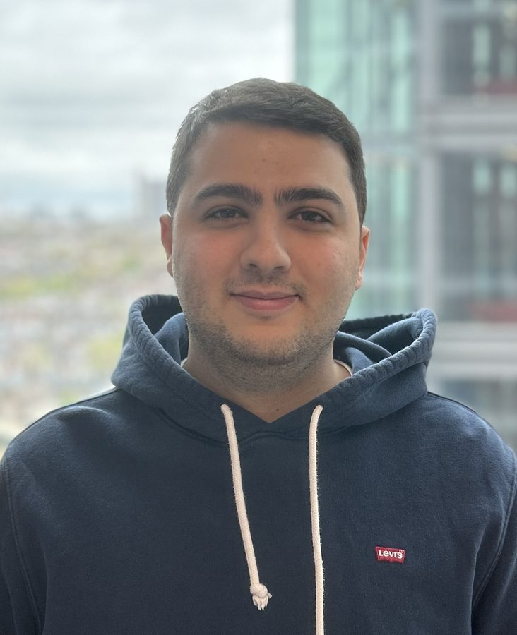
Charbel Gergian
Research Assistant and PhD studentBio:
I am working as a Computational Research Assistant in the Nott lab while also completing a PhD. My aim is to use epigenetic data of brain cells to better understand mechanistic effects of dementia related genetic risk factors. I use bioinformatic approaches to predict how Alzheimer's Disease or Small Vessel Disease risk variants are related to changes in transcription factor binding and altered gene regulatory networks, specifically in immune and vascular cells. Before starting my PhD, I completed a MSc in Applied Genomics at Imperial, where I first joined Dr. Alexi Nott’s lab for my research project. After finishing my Master's, I stayed on with the Nott group to continue the project and further explore the complexities of genetic risk.
Email: charbel.gergian23@imperial.ac.uk
Research Technician
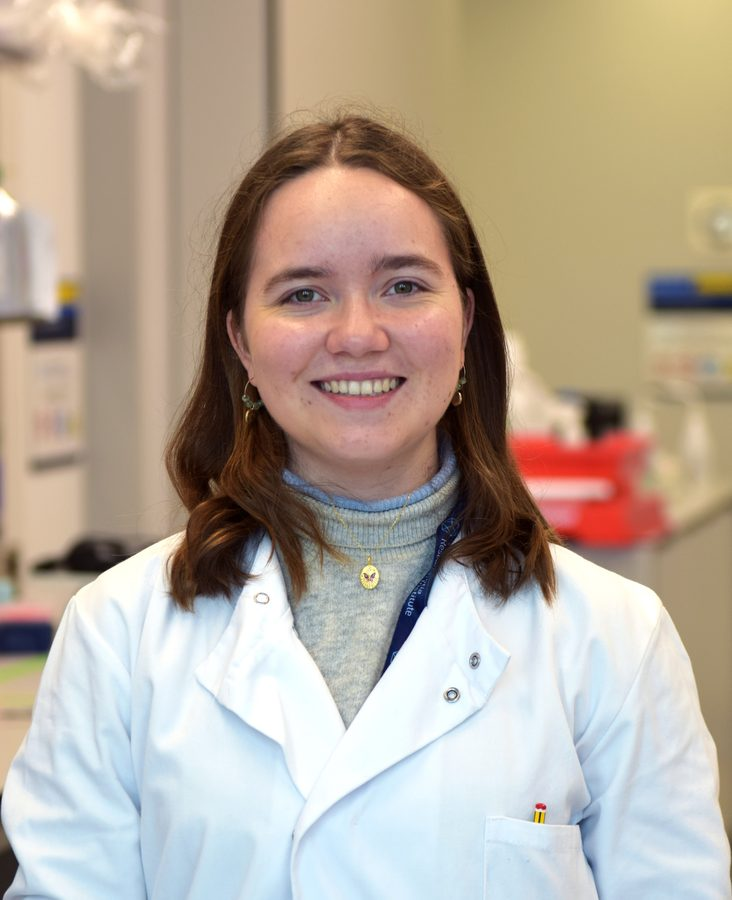
Ana Narvaez Paliza
Research TechnicianBio:
I am a research technician in the Nott Lab, where I support projects investigating epigenetic dysregulation in glial and vascular cells during ageing and Alzheimer’s disease. Before joining the lab, I completed my BSc in Biomedical Sciences at King’s College London, where I studied microglia and neuronal communication through extracellular vesicles in the context of pain hypersensitivity in Professor Marzia Malcangio’s group. I then completed an MSc in Translational Neuroscience at Imperial College London, carrying out my research project in Dr Johanna Jackson’s lab. My work there focused on characterising Alzheimer’s disease resilience and ageing, examining pathology profiles and their links to synaptic changes. My main interests are neurodegenerative disorders and the mechanisms that drive vulnerability versus resilience, with the goal of identifying therapeutic targets that prevent vulnerability from developing.
Email: ana.narvaez-paliza24@imperial.ac.uk
Postgraduate Students
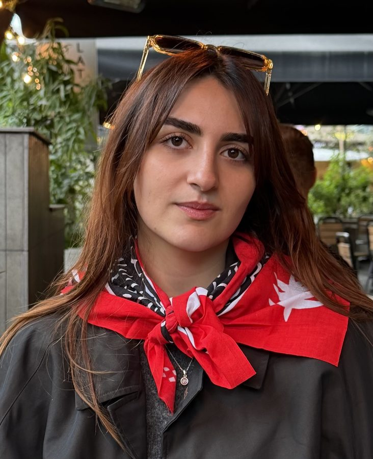
Kara Eyi
MRes Experimental Neuroscience student, ImperialBio:
I hold a BSc in Biomedical sciences from the University of Warwick and I am currently undertaking my master’s in Experimental Neuroscience at Imperial College London. During my first rotation, I investigated impairment of synaptic downscaling in a mouse model of amyloidosis. I have now joined Dr Nott’s lab for my second rotation characterising the epigenomic landscape of peripheral blood mononuclear cells in cerebral small vessel disease. In the future, I wish to pursue a career in research.
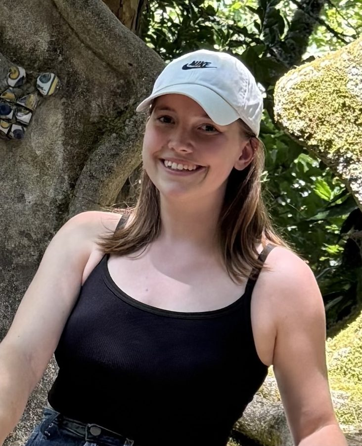
Mari Hronska
MSc Translational Neuroscience student, ImperialBio:
I am an MSc Translational Neuroscience student at Imperial College London. I am conducting my laboratory research project in the Nott Lab, focusing on the role of Polycomb Repressive Complexes (PRCs) in Alzheimer’s disease. Using the CUT&Tag method, I am investigating epigenetic modifications and the effect of PRCs on Alzheimer’s disease patients. Prior to my MSc, I completed a BSc in Neuroscience at the University of Edinburgh. For my final-year project, I used CRISPR/Cas9 to knock down the Acap3b gene in zebrafish, studying the resulting morphological changes in hypothalamic circuits.
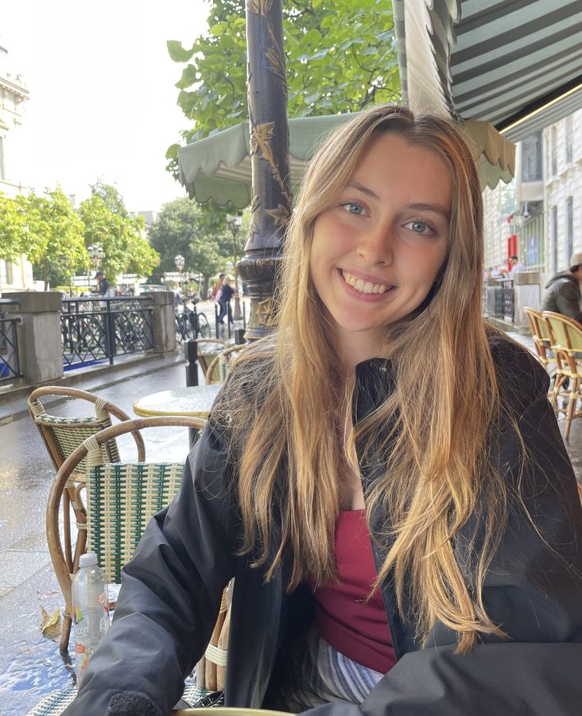
Rebekah Bourne
MSc Translational Neuroscience student, ImperialBio:
I am a master’s student on the MSc Translational Neuroscience programme at Imperial and have joined the Nott lab for a six-month research project as part of this course. My research focuses on MITF, a transcription factor which is associated with Alzheimer’s disease in microglia. Using CUTTag sequencing, I aim to map MITF binding sites across the genome to better understand its disease-associated role and how it contributes to gene regulation. This will help identify potential downstream targets and mechanisms of genetic risk variants. Before starting this MSc, I completed a BA in Biological Natural Sciences at the University of Cambridge.
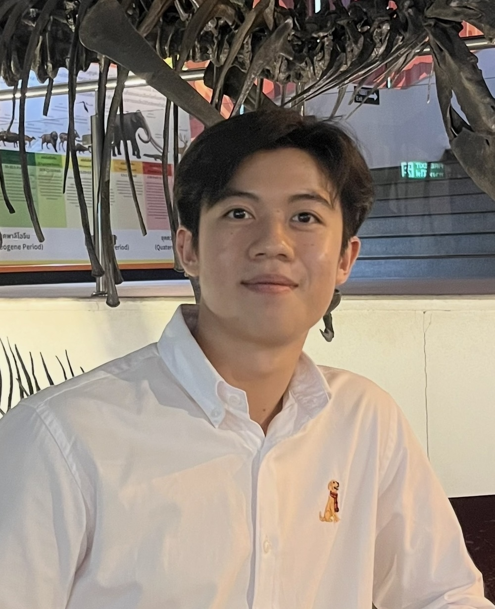
Pakapol (Toon) Eamsuwan
MSc Applied Genomics student, ImperialBio:
I am a MSc Applied Genomics student. Under the supervision of Dr. Alexi Nott, I am conducting a research project as part of my programme, focusing on the epigenome of human neurovascular cell types, aiming to map epigenetic markers to better understand its association with diseases. Prior to my MSc, I completed a BSc in Biotechnology at Chulalongkorn University in Bangkok.